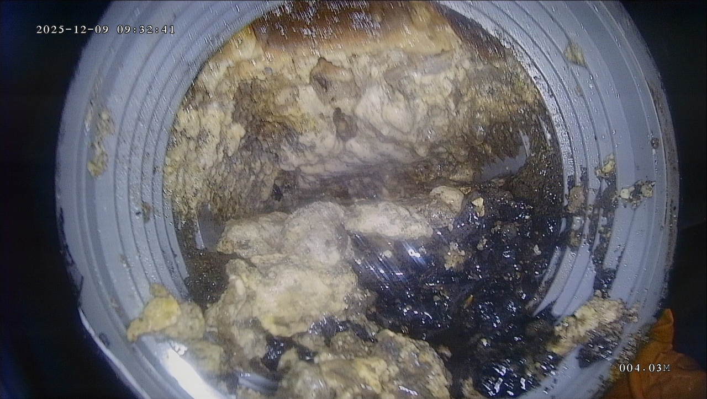
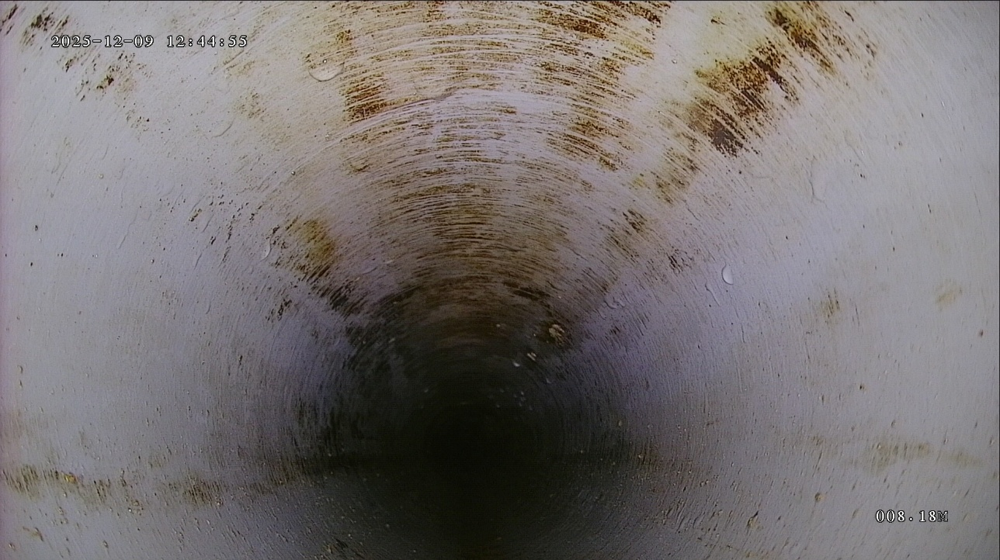

台中管路疏通服務
台中餐飲廚房油污堵塞、排水回堵與水刀清洗
餐飲店廚房排水管長期承受油脂與食物殘渣，容易形成厚油垢並造成堵塞。百川通提供台中清水與周邊區域管路疏通、高壓水刀清洗與管路內視鏡檢測。
台中服務區域：清水、沙鹿、梧棲、大甲、大雅、豐原、西屯、北屯、南屯、太平、大里及台中周邊區域。
台中餐飲廚房排水堵塞適合水刀清洗嗎？
餐飲廚房通常油污量較高，若排水變慢或反覆堵塞，高壓水刀清洗能較完整沖洗管壁油垢。
營業店面施工會影響營業嗎？
施工時間可依現場狀況討論，建議安排非尖峰時段，並先確認排水口位置與可施工空間。
台中清水可以先傳照片估狀況嗎？
可以。請提供堵塞位置、照片或影片、店面型態與大約地址區域，方便初步判斷。